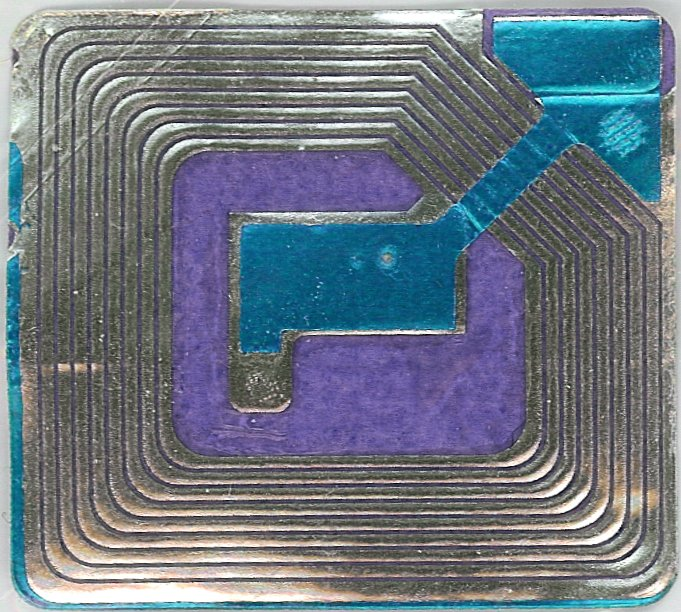
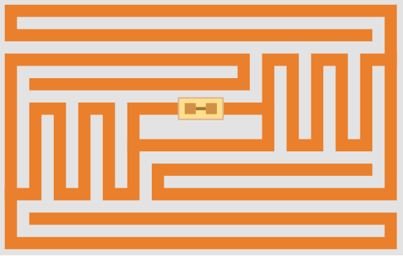
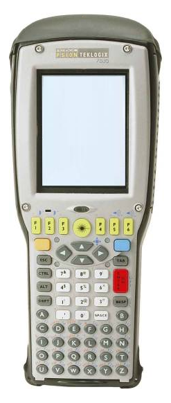
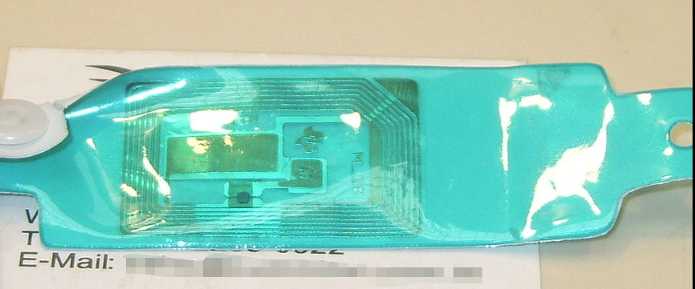
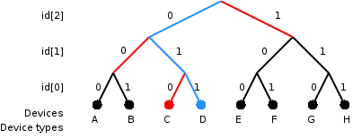

RFID射频识别
RFID射频识别
射频识别（英语：Radio Frequency IDentification，缩写：RFID）是一种无线通信技术，可以通过无线电信号识别特定目标并读写相关数据，而无需识别系统与特定目标之间建立机械或者光学接触。
无线电的信号是通过调成无线电频率的电磁场，把数据从附着在物品上的标签上传送出去，以自动辨识与追踪该物品。某些标签在识别时从识别器发出的电磁场中就可以得到能量，并不需要电池；也有标签本身拥有电源，并可以主动发出无线电波（调成无线电频率的电磁场）。标签包含了电子储存的信息，数米之内都可以识别。与条形码不同的是，射频标签不需要处在识别器视线之内，也可以嵌入被追踪物体之内。
许多行业都运用了射频识别技术。将标签附着在一辆正在生产中的汽车，厂方便可以追踪此车在生产线上的进度。仓库可以追踪药品的位置。射频标签也可以附于牲畜与宠物上，方便对牲畜与宠物的积极识别（防止数只牲畜使用同一个身份）。射频识别的身份识别卡可以使员工得以进入建筑锁住的部分，汽车上的射频应答器也可以用来征收收费路段与停车场的费用。
某些射频标签附在衣物、个人财物上，甚至于植入人体之内。由于这项技术可能会在未经本人许可的情况下读取个人信息，这项技术也会有侵犯个人隐私之隐忧。
应用
射频标签可以附着于物品上并用于对库存、资产、人员等的追踪与管理。譬如，射频标签可以附着于轿车上，电脑设备上，书籍上，移动电话上等。
贴式商品射频辨识
沃尔玛正在使用的射频标签
读取机
医疗用途射频辨识
在社会媒体领域里，射频识别被用于链接虚拟世界和现实世界。社会媒体中的射频识别于2010年facebook年会上首次亮相。[1]
射频识别与手动系统如条形码相比有几项优势。即便标签被他物遮盖或者不可见，射频标签只要靠近或经过一个读取器就可以读取。无论是在手提箱里，纸箱里，盒子里等，射频标签都可以被读取。读取机可以一次读取上百个射频标签，而条形码只能一次一读。
在2011年，生产一个被动式射频标签的价格是美元5分起跳；配在金属上的或是可以承受伽马射线除菌过程的特殊标签最高可以达到5美元。用于追踪货柜、医疗器械、或者在数据中心监视环境的主动式标签的单价是50美元起跳，最高100元。可以监控温度与湿度的“电池辅助型被动标签”（Battery Assisted Passive tags，BAP tags）在美元3至10元之间。
射频识别技术可应用的领域十分广泛，主要决定因素是该项技术在相应领域中的经济效益。经常提到的具体应用包括：
钞票及产品防伪技术
身份证、护照、通行证（包括门票）
电子收费系统，如香港的八达通与台湾的悠游卡、台湾通、一卡通、eTag及马来西亚的一触即通卡等
家畜、宠物或野生动物识别
病人识别及电子病历
物流管理
射频识别可以实现从商品设计、原材料采购、半成品与制成品之生产、运输、仓储、配送、销售，甚至退货处理与售后服务等所有供应链环节之即时监控，准确掌握产品相关信息，诸如各类、生产商、生产时间、地点、颜色、尺寸、数量、到达地、接收者等
行李分类
香港国际机场及荷兰阿姆斯特丹国际机场等都部署了使用被动式无电源标签的射频识别行李分类解决方案。和使用条码的行李分类解决方案相比，使用被动式无电源标签的射频识别行李分类解决方案可从不同角度识别行李标签的ID，识别速度更快，结果更准确，标签上的信息储存量也比条码多。
门禁系统
许多地区、仓库、办公室、学校及住宅等，都在大门及房门设有读卡器，用以控制何人、何时、何地的出入。在整个电子商务领域，许多人把射频识别技术视为继互联网和移动通信两大技术浪潮后的又一次大潮。
图书馆
图书馆已经使用射频识别来代替馆藏上的条码。标签能够包含识别信息或只作为一个数据库的主键。一个射频识别系统能够代替或辅助条码，并能提供另一种目录管理和读者自助式借阅的方法。它同样可以当作一种安全设备来代替传统的电磁安全条码。据估计如今全球超过3,000万的馆藏已使用射频识别标签，里面包括罗马的一些梵谛冈图书馆。
既然射频识别标签能够透过一个物体被读取，那就没有必要打开一本书的封面或DVD壳来扫描它。无论是在传输带上运输的书本还是一叠厚厚的书本都能被读取，这减少了工作人员作业的时间，并且能由借阅者们自行完成，也减少了需要图书馆工作人员帮助的时间。借由便携式阅读器，在一整排书架上的材料目录在几秒内就能被扫描完成。然而在2008年这项技术对许多小型图书馆来说还太昂贵。对于一个中型图书馆来说更换周期也大约在11个月左右。一项2004年荷兰的预估指出一个一年借出10万本书的图书馆需要支付5万欧元的费用（借还机需一万，监测门廊需一万，标签每个0.36欧元）。射频识别技术取代了大部分职员的职能，这意谓着所需工作人员的减少和其中一些人员的被解雇。不过在北美迄今还未发生过一起图书馆因引入射频识别而解雇职员的事情。事实上，图书馆在人事上的预算减少而在基础设施上的预算增加，使得图书馆通过增设自动化设备来弥补职员人数的减少。不过，让射频识别技术接管的工作对管理员来说并不是首要任务。一项在荷兰的调查表明，借阅者对工作人员如今能更好地回答疑问感到满意。
隐私问题在图书馆使用射频识别过程中被提了出来。由于一些射频识别标签能够在高达100米的地方被读取，一些人士担忧敏感信息会以一种不合法的方式被读取。其实，图书馆的射频识别标签不包含任何光顾者的信息。大多数图书馆使用的标签所发出的频率只能在大约3米范围内才能被读取。不过另一种非图书馆机构能够在不被管理员许可的情况下偷偷记录下每一个离开图书馆的人的射频识别标签。一个简单的应对方法是让书本发射只与图书馆数据库有相关含义的密码。另一种强化方法是在每本书被归还后重新赋予密码。将来，读者可能会变得无处不在（并可能联网），那时被盗的书籍即使在图书馆外也能被追踪。如果标签小到在一个随即页中几乎不可见，那么移除标签也会变得困难。标签也很可能是由出版方植入的。
射频识别芯片植入人体
美国食物及药物管理局允许VeriChip公司将射频识别芯片直接移植到人体内，让使用者不需携带卡片也可被识别[2]。此外，也有科技狂热者将射频识别植入体内，控制自己的电子设备[3]。
运作
标签
无线射频辨识系统将标签附着在要辨识的物体上。一个叫询问器（或称阅读器）的双向无线电波收发器向标签发出信号并解读其应答。阅读器一般会将其收到的信息传输到载有射频识别中间件或者射频识别软件的电脑系统上。
射频识别标签利用电子技术将讯息储存在一个永久性的储存区上，标签中间有一个微型无线电波收发器。阅读器发出编码过的无线电信号来“询问”射频标签，标签收到信号后发出自身的识别讯息来应答。识别讯息既可以是标签自身的串行号，也可以是其他有关产品的信息，如物料编号、生产日期、批数或批号、抑或是其他特定信息。
射频识别标签包括被动式标签（无源标签）、主动式标签（有源标签）、以及电池辅助式无源标签。主动（有源）标签内置有电池，周期性发射识别信号。电池辅助式无源（BAP）标签内置有小电池，只在射频阅读器附近才会触发。被动式标签没有电池，它是用阅读器传出的无线电波的能量来供给自身电力，所以更加便宜小巧。然而，为了使被动式标签工作，必须将其照射在约莫三倍于信号传输能量级的环境中，这导致了干涉和辐射问题。
标签可以是只读式或读写式的：只读式标签，厂方定出一个串行号，作为登陆该物品数据库的密码；读写式标签，系统使用者可以把某物品的特定数据写进标签。现场可编程序的标签是单次写入多次读取（WORM）的，用户可以把产品的电子码写进空白标签里。一个没有串行号的标签常常会有被操控的危险。
射频识别标签至少有两部分：一是一个集成电路来存储和处理信息、调制和解调一段射频信号、从阅读器传来信号中的收集直流电能等等；二是一个天线收取信号传导信号。标签信息被储存在了非易失性内存中。射频识别标签包括一个逻辑集成芯片或一个已编程或可编程的数据处理器来分别处理和传送传感器数据。
射频识别阅读器发出一个加密的无线信号来询问标签。标签收到信号后用它本身的串行号和其他信息来回应它。这可能是独一无二的标签串行号或者是像储藏量、份额、批号、生产日期这样的与产品相关的具体信息。
阅读器
固定式阅读器，装置若干部便可以创造一个可严密控制的“询问区”，标签进出询问区时就可以在这个界限分明的阅读器区域中被读取。移动式阅读器则可以手持使用或者装在车辆上使用。
频率
射频识别频带
频带 |
频带分级级别 |
规章管理 |
读取范围 |
数据速度 |
备注 |
标签估价 （以2006年美元计算） |
120到150千赫 |
（低频） |
无规定 |
10公分 |
低速 |
动物识别，工厂数据的收集 |
1元 |
13.56兆赫 |
（高频） |
全世界通用ISM频段 |
1米 |
低速到中速 |
小卡片 |
0.50元 |
433兆赫 |
（特高频） |
近距离设备SRD |
1到100米 |
中速 |
国防应用（主动式标签） |
5元 |
868到870兆赫（欧洲） 902到928兆赫（北美） |
特高频 |
ISM频段 |
1到2米 |
中速到高速 |
欧洲商品编码，各种标准 |
0.15元（被动式标签） |
2450到5800兆赫 |
（微波） |
ISM频段 |
1到2米 |
高速 |
802.11WLAN（无线局域网），蓝牙标准 |
25元（主动式） |
3.1到10吉赫 |
（微波） |
超宽频 |
最高200米 |
高速 |
需要半主动或主动标签 |
设计为5元 |
阅读器和标签之间的信号传播有好几种方式。这几种方式却相互不能兼容，而是要取决于标签所使用的频带。靠短波和长波运作的标签的非常接近读取器的天线（短于一个波长的距离）。在近场区中，标签以电子的方式与读取器中的发射器紧密地耦合在一起。该标签可以通过改变标签所表示的电气负载，调制由读取器产生的电场。通过在较低和较高的相对负载之间进行切换，该标签产生读取器可以检测到的变化。在UHF和更高的频率上，该标签不止有读取器的一个无线电波长。标签可以反馈信号。有源标签可以包含功能分离的发射器和接收器，标签不必对读取器询问信号的频率作出回应。
信令
电子产品码（EPC）是标签中储存的常见的数据类型。当由RFID标签打印机写入标签时，标签包含96位的数据串。前8位是一个标题，用于标识协议的版本。接下来的28位识别管理这个标签的数据的组织；该组织的编号是由EPCglobal协会分配的。接下来的24位是对象分类，用于确定是什么类别的产品，最后36位是这个标签唯一的串行号。最后这两个字段是由发布该标签的组织来设置的。与URL不同的，总的电子产品码编号可以用来作为进入全球数据库的钥匙，它能唯一地标识一个特定的产品。[7]
一般来说，会有多个标签同时回应标签读取器，例如，很多个贴有标签的单独的产品可能会被放在一个共用的盒子或一个共用的托盘上进行运输。冲突检测在能够读取这样的数据时是非常重要的。使用两种不同类型的协议来“辩识”某一标签，能够从许多类似的标签之中读取出它的数据。在slotted Aloha系统中，读取器发出一个初始化命令和一个参数，标签单独用来伪随机地延迟它们的回应。当使用“自适应二进制树”的协议时，读取器发送一个初始化符号，然后一次发送一位ID数据，只有与这一位相符的标签才会响应，最终只有一个标签能符合整个ID字符串。[8]
用于识别RFID标签的二进制树法一例。
这两种方法在用于多个标签或多个重叠的读取器时都有缺点。
电子产品码信息系统
RFID标签中的EPC信息，可由后台信息系统EPCIS来储存与管控，EPCIS (EPC Information Service)是GS1在其EPCglobal Network架构中的一个重要标准，它负责储存EPC及其相关动态信息，每一笔信息称为事件（Event），并依权限提供查询界面。[9]
EPCIS所储存的EPC事件中，包含此EPC在某时某地之各种状态，并归纳成4W（What/When/Where/Why），各参与单位都能以本身的权限查询物品的状态，其事件资料可以被如下范例解读：
What - 识别代码为12345商品于
When - 2012年3月1日上午10时在
Where - 工厂甲之闸门A，被读取到
Why - 正要被运送（shipping），其后续状态为运送中（in-transit）
EPCIS标准是公开且免费的，有意愿的厂商都可以从GS1 EPCglobal下载规格后开发实作，如果储存及查询的资料是跨国性的，则建议采用标准EPC编码、标准商用字汇编码及标准资料格式，以期对商品资料的判读一致。在实务上，各厂商亦可不自行建置而租赁集中式的EPCIS系统，例如国内创识科技的T2 EPCIS系统。
射频识别标签的类别
RFID反馈信号。
依据标签内部供电有无，RFID标签分为被动式、半被动式（也称作半主动式）、主动式三类。
被动式
被动式标签没有内部供电电源，其内部集成电路通过接收到的电磁波进行驱动，这些电磁波是由RFID读取器发出的。当标签接收到足够强度的讯号时，可以向读取器发出数据。这些数据不仅包括ID号（全球惟一代码），还可以包括预先存在于标签内EEPROM（电可擦拭可编程只读内存）中的数据。
由于被动式标签具有价格低廉，体积小巧，无需电源等优点。目前市场所运用的RFID标签以被动式为主。
被动式射频标签借由读取器发射出的电磁波获得能量，并回传相对应的反向散射信号至读取器。然而在传播路径衰减的环境下，限制了标签的读取距离。
半被动式
一般而言，被动式标签的天线有两种作用：
接收读取器所发出的电磁波，藉以驱动标签内的IC。
标签回传信号时，需要借由天线的阻抗作信号的切换，才能产生0与1的数字变化。关键是，想要有最好的回传效率的话，天线阻抗必须设计在“开路与短路”，这样又会使信号完全反射，无法被标签的IC接收，半主动式的标签设计就是为了解决这样的问题。半主动式的规格类似于被动式，只不过它多了一颗小型电池，电力恰好可以驱动标签内的IC，若标签内的IC仅收到读取器所发出的微弱信号，标签还是有足够的电力将标签内的内存资料回传到读取器。这样的好处在于，半主动式标签的内建天线不会因读取器电磁波信号强弱，而无法执行任务，并自有足够的电力回传信号。相较之下；半主动式标签，比被动式标签在反应上速度更快，距离更远及效率更好。
主动式
与被动式和半被动式不同的是，主动式标签本身具有内部电源供应器，用以供应内部IC所需电源以产生对外的信号。一般来说，主动式标签拥有较长的读取距离和可容纳较大的内存容量可以用来储存读取器所传送来的一些附加讯息。主动式与半被动式标签差异为：主动式标签可借由内部电力，随时主动发射内部标签的内存资料到读取器上。
主动式标签又称为有源标签，内建电池，可利用自有电力在标签周围形成有效活动区，主动侦测周遭有无读取器发射的呼叫信号，并将自身的资料传送给读取器。[10]
技术及性能参数
射频识别标签是目前射频识别技术的关键。射频识别标签可存储一定容量的信息并具一定的信息处理功能，读写设备可通过无线电信号以一定的数据传输率与标签交换信息，作用距离可根据采用的技术从若干厘米到1公里不等。
识别标签的外形尺寸主要由天线决定，而天线又取决于工作频率和对作用距离的要求。目前有四种频率的标签在使用中比较常见。他们是按照他们的无线电频率划分：低频标签（125或134.2 kHz），高频标签（13.56 MHz），超高频标签（868~956 MHz）以及微波标签（2.45 GHz）。由于目前尚未制定出针对超高频标签使用的全球规范，所以此类标签还不能够在全球统一使用。而超高频标签的应用目前也最受人们的注意，此类标签主要应用在物流领域。频率越高，作用距离就越大，数据传输率也就越高，识别标签的外形尺寸就可以做得更小，但成本也就越高。目前面向消费者的识别标签外形尺寸需求，一般以信用卡或商品条形码为准。
2005年初每标签的价格仍在30欧分左右，大批量（十亿个以上）生产的射频识别标签的价格在2011年已在10欧分上下。
鉴于标签和读写设备之间无需建立机械或光学接触，密码技术在整个射频识别技术领域中的地位必将日益提高。随着射频识别的普及，不同厂家的标签和读写设备之间的兼容性也将成为值得关注的问题。
此外，使用寿命、使用环境和可靠性也是重要参数。
射频识别技术还包括了一整套信息技术基础设施，包括：
射频识别标签，又称射频标签、电子标签，主要由存有识别代码的大规模集成线路芯片和收发天线构成，目前主要为无源式，使用时的电能取自天线接收到的无线电波中的能量；
射频识别读写设备以及
与相应的信息服务系统，如进存销系统的联网等。
将射频类别技术与条码技术相互比较，射频类别拥有许多优点，如：
可容纳较多容量。
通信距离长。
难以复制。
对环境变化有较高的忍受能力。
可同时读取多个标签。
相对地有缺点，就是建置成本较高。不过目前透过该技术的大量使用，生产成本就可大幅降低。
局限、问题与隐忧
金属及液体环境对射频识别的影响
RFID特高频（UHF）标签因电磁反向散射（Backscatter）特点，对金属和液体等环境比较敏感，可导致这种工作频率的被动标签（Passive tag）难以在具有金属表面的物体或液体环境下进行工作，但此类问题随着技术的发展已得到完全解决。
使用风险
由于RFID标签无须直接与收发器接触，使用者会在不知情的情况下被他人读取标签内存储的信息，构成安全隐忧。
ID卡注意事项
ID卡，全称身份识别卡（Identification card），习惯称作“EM卡”。ID卡即为THRC12/13只读式非接触IC卡，它靠读卡器感应供电并读出存储在芯片EEPROM中的唯一卡号，卡号在封卡前一次写入，封卡后不能更改。无源和免接触是该芯片两个最突出的特点，射频接口电路是关键的核心技术，它从读卡器接收射频能量，为芯片产生电源和时钟，并采用相移键控和加载调幅等技术实现卡与读卡器间的无线通讯。常用国产ID芯片为TK4100，与EM4200芯片兼容ID卡是普通射频卡。
最简单、最常见的射频卡就是低频125KHz的ID卡（有厚卡、薄卡之分）。ID卡因为一度大量采用瑞士EM4100/4102芯片，所以还被习惯称作“EM卡”。ID卡具有只读功能，含有唯一的64b防改写密码，其卡号在出厂时已被固化并保证在全球的唯一性，永远不能改变。其成本低，较多应用在售饭、考勤等方面。
①首先要知道该射频卡用的大概芯片种类。是IC卡，还是ID卡；是T5557卡，还是TI卡……因为每一类芯片的价格不同，如MF1的芯片价格是ID卡的好多倍，相应的卡片价格也高。
②其次要了解该射频卡用的芯片具体型号。MF1卡还分S50卡与S70卡；ID卡还分只读卡与读写卡；TI卡低频卡还分只读低频卡与读写低频卡……同样每一款具体芯片的价格差别也很大，S70芯片价格就是S50芯片的2倍左右。
③另外，要知道该款芯片卡是原装卡还是兼容卡。比如MF1卡用芯片有原装飞利浦生产的S50芯片，也有华虹、复旦等公司生产的兼容芯片。原装芯片卡与兼容芯片卡差别一般在1元-2元左右，数量少还无所谓，数量大了区别很大。
④印刷或生产中的特殊情况：射频卡打孔或烫金。因为射频卡中含有芯片或线圈，打孔可能会打到芯片或线圈或者影响磁场，烫金也会造成类似的效果。万一遇到这种情况，要注意芯片位与线圈位。射频卡打凸的情况很少见，原因与射频卡打孔或烫金的情况类似。与此相反，接触式IC卡打凸烫金的现象较普遍，只要不在芯片位上就相对影响较小，不过芯片位要与北面文字（尤其是箭头）或插卡方式对应。
⑤遇到打内码的情况ID卡经常会遇到打内码（ID的物理内码，即ID的物理序列号），常见的是ABA（8H）格式、ABA（6H）格式、WG26格式。其中，要注意一点：目前，8803、8805芯片以大号码为主，ABA（8H）格式与ABA（6H）格式（8位，如果要10位前面加两个“0”）不同；4001芯片以小号码为主，ABA（8H）格式与ABA（6H）格式（8位，如果要10位前面加两个“0”）相同，但也有大号码。大小号码的界限是ABA（8H）格式为“0016777215”，即ABA（8H）格式小于“0016777215”的为小号码[此时ABA（8H）格式的数据与ABA（6H）格式的数据一样]，即ABA（8H）格式大于“0016777215”的为小号码[此时ABA（8H）格式的数据与ABA（6H）格式的数据完全不一样]。MF1卡也会遇到打内码的情况，尤其是公交卡。MF1卡打内码一般是打ABA的反码，有时也会遇到WG26的情况。MF1卡与ID卡的特殊内码（即自己定义的内码格式），就要编写特殊软件来进行。针对ID卡来说，还会遇到ID卡物理内码要求连号的特殊情况。ID卡物理内码连号，指这一段连码的ID物理号全部买断，当然允许其中断号。因为ID卡层压，废品率较高，可以有些ID芯片压坏了，其中的一引起ID物理号就断号。
⑥如果是ID卡，还涉及到厚度及相应价格。通常来说，MF1卡厚度在0.80mm，但实际上人像也许厚度一般在0.85～0.90mm，这与人像工艺有关。但对于ID厚度来说，按厚度来说一般分为厚卡（1.80mm）、中厚卡（也称为厚薄卡，1.05mm）与薄卡（0.80mm），厚度不同，价格不同，通常价格是按薄卡↘中厚卡↘厚卡而递减，因为这涉及到电容、芯片等相关的技术与成本问题。一般自动发卡机（这里仅指拿卡取卡的那种机具）能过的射频卡厚度在0.78-0.95mm，尤其是停车场使用较多。当然自动发卡机可以调厚度，但客户不一定愿意调整自动发卡机。
IC/ID卡内码(UID)常见格式
在智能IC卡的生产环节，为了方便系统使用及查询，多数系统需要把卡片的UID（俗称内码）用激光雕刻在卡面上，以下为大家分析下常见的一些内码格式。
如：Mifare 1k S50卡第0扇区第0块的数据：
2A83155EE288040047C129D24D000607
曼彻斯特码（16进制）：
1、取正码即为“2A83155E”，即0扇区0块的前4个字节，
共8个数字或字母。
2、取反码即为“5E15832A”，即0扇区0块的前4个字节反读，
共8个数字或字母。
ABA码（10进制）：
1、取正码即为曼彻斯特码正码换算过来的十进制数，根据举例计算结果为“0713233758”，
共10个数字。
2、取反码即为曼彻斯特码反码换算过来的十进制数，根据举例计算结果为“1578468138”，
共10个数字。
ID卡内码常见格式:
id卡每张卡的芯片都有一个唯一的芯片内码,不同的读卡器读出来的内码号不一样是因为id卡的内码有多种国际标准的编码规则。有些读卡器读出来的id卡号会重复，多是因为没有按照国际编码规则来读卡。
曼彻斯特码为 16进制，ABA码与维根码均为10进制。
ID 卡的曼彻斯特内码 = 版本代码 + 客户代码+ID 代码
举例：12 5533FFFF ，版本代码为“ 1 ”，客户代码为“ 2 ”， ID 代码（ 8 个数字或字母）为“ 5533FFFF ”。
ABA （ 8H ）： ID 代码（ 8 个 数字或字母 ，根据举例为“ 5533FFFF ”）换算为 10 进制，根据举例计算结果为“ 1429471231 ”，共 10 个数字。
ABA （ 6H ）： ID 代码（后 6 个 数字或字母 ，根据举例为“ 33FFFF ”）换算为 10 进制，根据举例计算结果为“ 03407871 ”，共 8 个数字。
ABA （ 4H ）： ID 代码（后 4 个 数字或字母 ，根据举例为“ FFFF ”）换算为 10 进制，根据举例计算结果为“ 65535 ”，共 5 个数字。
WG26 （ 2H+4H ）： ID 代码（倒数第 6 、第 5 个 数字或字母 + 最后 4 个数字或字母，根据举例为“ 33+FFFF ”）换算为 10 进制，根据举例计算结果为“ 051,65535 ”，共 8 个数字。
WG34 （ 4H+4H ）： ID 代码（倒数第 8 、第 7 、第 6 、第 5 个 数字或字母 + 最后 4 个数字或字母，根据举例为“ 5533+FFFF ”）换算为 10 进制，根据举例计算结果为“ 21811,65535 ”，共 10 个数字。
参见
争议
《美国：从自由到法西斯主义》是一部在2006年由阿罗·拉索执导拍摄的纪录片，这部片在美国部分城市上映。
这部纪录片探讨了许多有关抗税运动的题材，包括了美国税务局、所得税、联邦储备系统、国民身份证、植入人体RFID标示（间谍芯片）、Diebold电子投票机器、全球化、美国沦为警察国家的可能性，以及其他主张政府迫害公民权利的案件。
参见
参考文献
跳转^ facebook's annual conference 互联网档案馆的存档，存档日期2012-04-27.
跳转^ RFID implant opens doors, Next Nature
跳转^ Andrew Hendry. Oxer on hardware hacking and the meaning of (Second) Life. computerworld. 2008-02-14[2008-02-15]. （原始内容存档于2008年2月17日）.
跳转^ Sen, Dipankar; Sen, Prosenjit; Das, Anand M., RFID For Energy and Utility Industries, PennWell, 2009, ISBN 978-1-59370-105-5, pp. 1-48
跳转^ Weis, Stephen A., RFID (Radio Frequency Identification): Principles and Applications, MIT CSAIL, 2007
跳转^ Daniel M. Dobkin, The RF in RFID: Passive UHF RFID In Practice（RFID中的RF：实用有源UHF RFOD）, Newnes 2008 ISBN 978-0-7506-8209-1,第8章
跳转^ John R. Vacca Computer and information security handbook（计算机与信息安全手册）, Morgan Kaufmann, 2009 ISBN 0-12-374354-0,第208页
跳转^ Bill Glover, Himanshu Bhatt ,RFID essentials （RFID基础）, O'Reilly Media, Inc., 2006 ISBN 0-596-00944-5,第88-89页
跳转^ 林建廷/李元生，行动商务概论、实务与应用 互联网档案馆的存档，存档日期2012-09-05.：无所不在的云端运算、行动装置、RFID与物联网，碁峯信息出版，2012年9月第1版，ISBN：978-986-276-549-4
跳转^ MTNet简讯第10期[永久失效链接] - 交通部航港单一窗口服务平台, 2009-10-26
外部链接[编辑]
RFID讲解包括信息关于技术，建筑学，标准，安全。（英语）
黄永东，无线射频编码在农产品供应链的追踪管理系统探讨。（PDF格式）
AutoID LabMIT（麻省理工）auto-id实验室。（English）